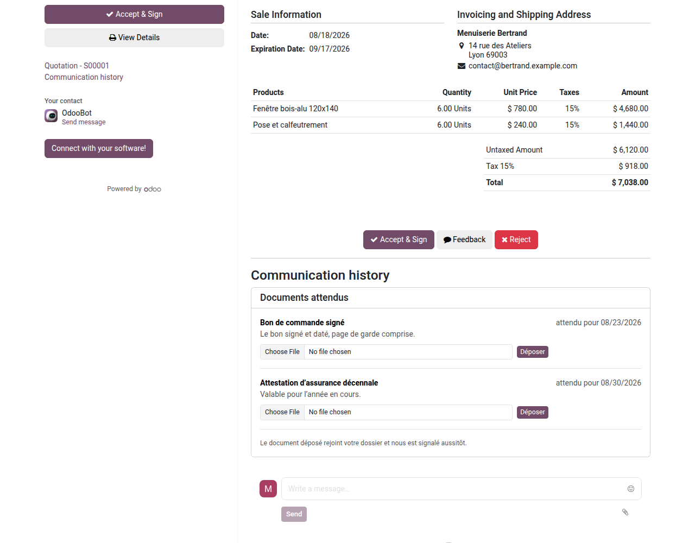
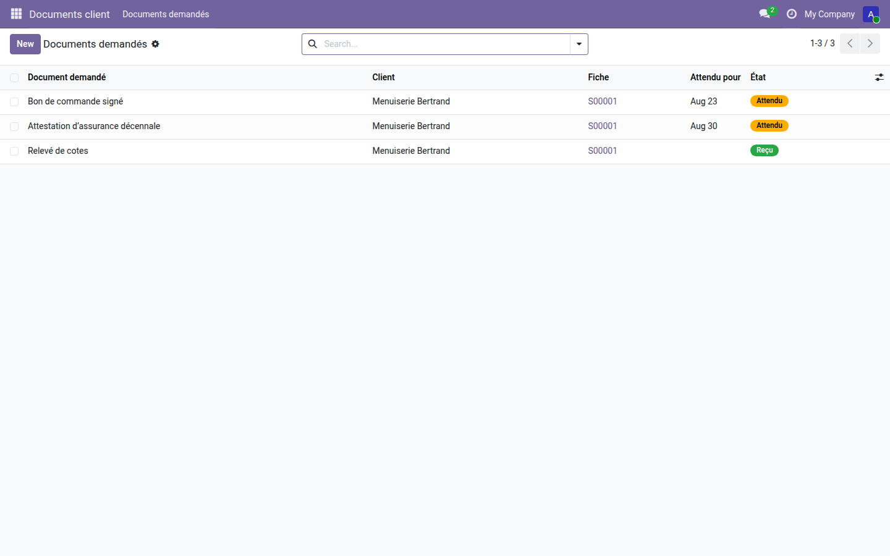

Vous demandez, le client dépose — depuis son devis, sa facture, sa tâche.
Le bon de commande signé, l'attestation d'assurance, le relevé de cotes : ces pièces arrivent par courriel, se perdent dans une boîte, et personne ne sait dire lesquelles manquent encore. Dans Odoo 19, un client ne peut envoyer un fichier depuis le portail qu'en écrivant un message dans le fil de discussion, et seulement sur les pages qui l'affichent. Rien ne lui dit ce qu'on attend de lui.
Sur son devis, deux documents attendus, leurs précisions et leur échéance. Aucun compte à créer : le lien qu'il a déjà suffit.

Deux pièces encore attendues, une reçue. La colonne Fiche ramène au devis d'un clic, et le document reçu reste attaché à la demande.

Recevoir le document est un début ; le classer, le faire signer et le retrouver en est la suite. La gamme OdooSkills propose une gestion documentaire complète, la signature électronique avec certificat, et le téléchargement groupé des pièces d'une fiche. Catalogue complet : apps.odooskills.com.
Licence LGPL-3 — compatible Odoo 19.0 Community et Enterprise. Support : support@odooskills.com.